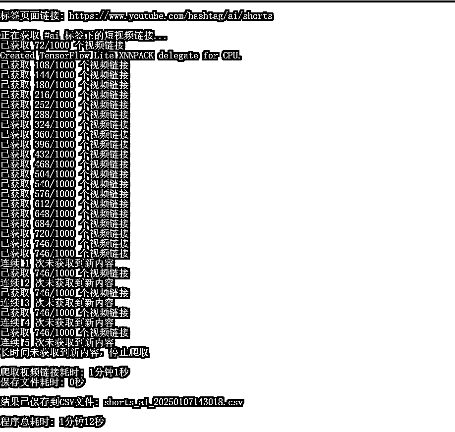
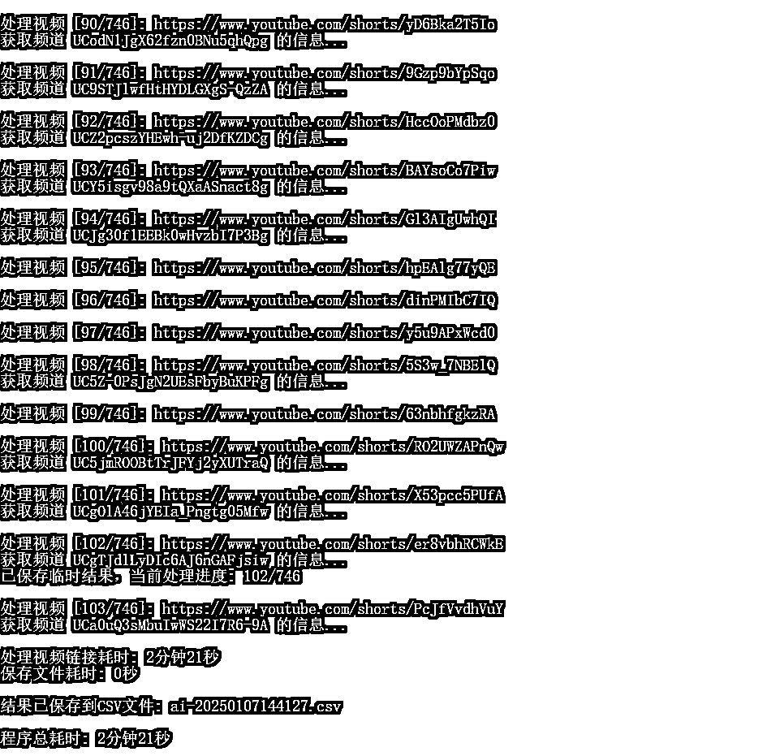

来源：https://v3m0vzf1tz.feishu.cn/docx/QRFodTL7Zo8gCUxX8sXcakFCngb
Hi~，大家好，我是一名生财新人，骥哥。
1.身为一名金融领域开发人员，加入生财后，先后参加今年两次航海行动，虽然投入时间有限，但收获颇丰，主要是从思想上逐步形成赚钱路径，并从圈友分享的帖子以及具体的航海行动获得实操方法。
2.本轮12月航海行动虽然没有报名cursor工具，但身为开发人员，对ai编程工具的火爆很感兴趣，也对照海航手册进行一轮学习，感受上来说cursor对于具备一定编程能力的人来说极大提高工作效率，在cursor的加持下，开发人员完全可以华丽转身产品经理和测试人员，高效构建自己的工具与应用。
3.由于本人航海报名youtube-short项目，而后也看了钱塘江鲤大佬的帖子——《1w个youtube账号对标收集》，因此在学习使用cursor之时，准备了同样的课题交给cursor，在实现项目的过程中，cursor也带给了本人不小的惊喜。具体内容分享如下。
本次采集的结果如下：
1）采集指定某tag下，https://www.youtube.com/hashtag/{tag}/shorts链接页面，所有短视频链接地址，并保存至文件A.csv，效果如下：
2）读取A.csv中所有短视频链接地址，逐次分析其对应频道信息，包括频道链接，注册时间，订阅数量，观看次数，发布短视频数量，效果如下：
对于步骤1），钱塘江鲤大佬采用影刀进行采集，本人直接让cursor生成python程序对页面进行爬取，这里要提到一点，cursor在本人提出爬虫爬取方式后，针对页面写出程序，但具体如何定位页面短视频链接的逻辑需要人工进行提示，因本人了解前端一些相关知识，直接提示cursor获取页面xpath路径为
//*[@id="content"]/ytm-shorts-lockup-view-model-v2/ytm-shorts-lockup-view-model/a/@href
的所有链接，cursor直接写好了爬取程序，并直接引入selenium工具模拟页面向下滚动，获取刷新后视频逻辑，跑了一遍基本就可以产生结果，此处不得不感慨cursor功能确实强悍，如果配合稍有专业背景的提示，就能够准确快速实现所需功能。

上述图片是程序采集ai标签页下所有短视频链接为例，可以看到采集到首次72个视频链接后，模拟滚动继续采集短视频链接，甚至可以发现每滚动一次新增采集数量36个。但这里有个问题，ai标签页面每次采集到大约750左右就不再更新了，因此程序里加入了尝试次数达到5次退出的机制，不同标签这个最大数量是不一样的，有了解原因的小伙伴可以留言一下。
结果文档如下：
对于步骤2）
这里由于获取到了要分析的短视频链接，直接采用youtube data api v3方式获取对应频道信息，这种方式优点在于获取方式直接，耗时短，获取的数据用于对标分析已经足够，缺点在于获取的信息有限，而且api调用存在限额情况。对于cursor，分条描述具体的需求，本人没有在提示词写明使用api v3方式，cursor直接使用了上述api，不得不说真的好用。

以上是频道信息获取程序运行情况，这里存在一个问题，因为使用了youtube data api，每天有1w配额的上限，基本上视频分析到200+个左右就会触发上限结束了，因此本示例中仅仅选择分析100个视频频道信息为例。由于程序自动添加了每2s一次的请求频率，100个视频的分析耗时2min20s，与钱塘江鲤大佬程序效率相比还需要优化。另外某些频道的短视频数量与实际有较大差异，可能api返回数据有不准确的地方。
结果文档如下：
1）加入生财后先后参加了公众号爆文，short视频，comfyui工具使用，以及自学了cursor工具。
个人目前的理解是做生意就是要找到客户群体，把产品出售给客户群体。
工具类航海的作用是降低产品生产成本，而其中AI工具的成熟，对于有志成为超级个体的人来说，低成本形成产品的过程成为可能。
内容类航海目前所教授的是可以借助现有平台的流量以及筛选算法，找到流量客户群体。（公众号，short，闲鱼）
但还有一个问题需要解决，就是做什么内容（产品），而对标系统就是解决这个问题。
对标系统本质来说应该属于市场分析系统，如果没有平台自带的一些分析系统，那就得借助第三方工具去完成，或者个人搭建分析工具，寻找分析方法，而工具往往涉及到一些网络信息爬取知识，因为要获取大数据进行分析。
对标系统的目的是少走弯路，降低试错成本，因为要相信“绝大多数人踩过的坑是会重复的，而爆款必定有其原因”。
1）cursor使用中为了避免某次修改后破坏之前的稳定版本，要使用版本管理工具，以便回退，本地下载使用git进行本地代码版本即可，如要同步至网络，建议使用国内版本管理工具，如码云，避免网络问题出现错误。
2）当提示词内容比较多，可以根据内容拆分成多条输入，cursor功能很强大，使用者也要提供尽量精准的需求提示词，以便于快速准确完成功能开发。
3）对于功能复杂的系统，采用最小原型思路，优先让cursor实现一版最简功能程序跑通，再逐步完善增加多个功能。
4）cursor使用量到期后如何无限制再次使用的方法，官网删除账号后，再次邮箱登录即可。不知后续官方是否会修改这个免费白嫖的问题。
cursor真的很强大，实操过程中感受丝滑，后续会体验其他AI编程工具，如bolt.new等，如果有好的体验感受分享给各位圈友。